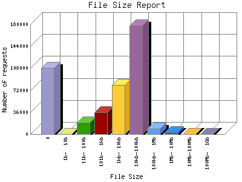

The File Size Report categorizes the size of the file being requested. This can be useful in optimizing site performance. (Remember that on a 28.8Kps modem, it will take on average of 40 seconds to download 100Kb of data.)

| File Size | Number of requests | Percentage of the bytes | |
|---|---|---|---|
| 1. | 0 | 108,054 | 0% |
| 2. | 1b- 10b | 39 | 0% |
| 3. | 11b- 100b | 19,074 | 0% |
| 4. | 101b- 1kb | 35,911 | 0.7% |
| 5. | 1kb- 10kb | 80,203 | 0.92% |
| 6. | 10kb-100kb | 177,777 | 13.36% |
| 7. | 100kb- 1Mb | 8,871 | 8.30% |
| 8. | 1Mb- 10Mb | 2,962 | 13.36% |
| 9. | 10Mb-100Mb | 240 | 25.57% |
| 10. | 100Mb- 1Gb | 123 | 38.43% |
This report was generated on March 30, 2006 04:52.
Report time frame July 28, 2005 09:49 to March 29, 2006 23:38.
| Web statistics report produced by: | |
| analog 5.1 | Report Magic for Analog 2.10 |